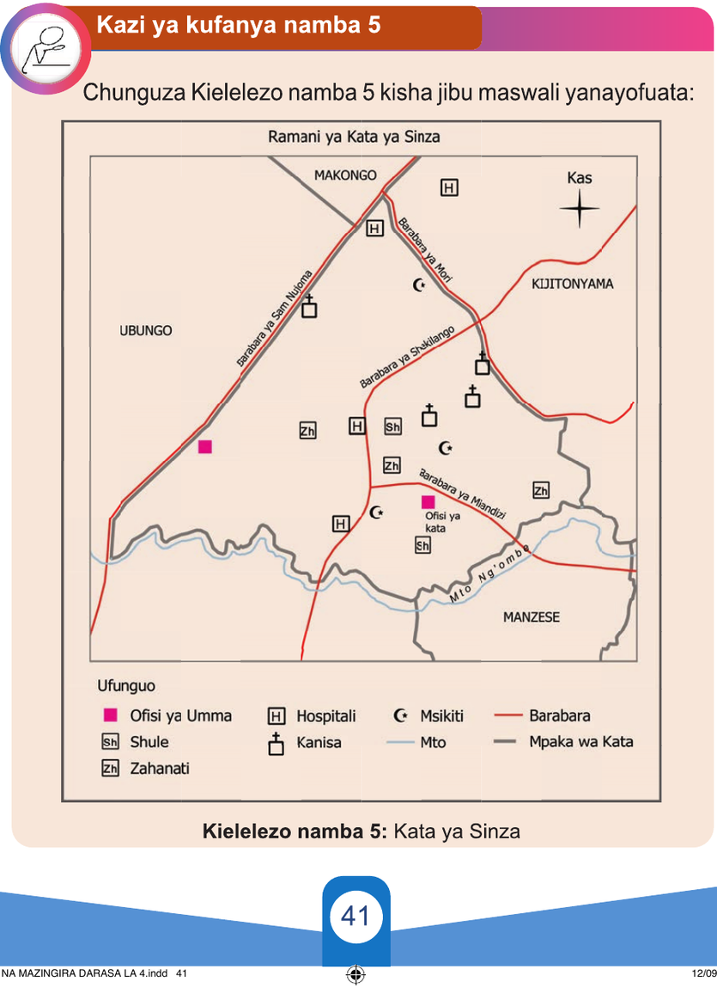

Kuchora ramani ya kata
Kata ni eneo la kiutawala linalojumuisha vijiji au mitaa kadhaa.
Uchoraji wa ramani ya kata unahusisha kuwasilisha mipaka ya kata pamoja na taarifa mbalimbali za kijiografia katika eneo la kata husika.
Mfano wa taarifa hizo ni hospitali, shule, kanisa, msikiti, barabara, pamoja na mito inayopatikana katika kata.
Kazi ya kufanya namba 5
Chunguza Kielelezo namba 5 kisha jibu maswali yanayofuata:
